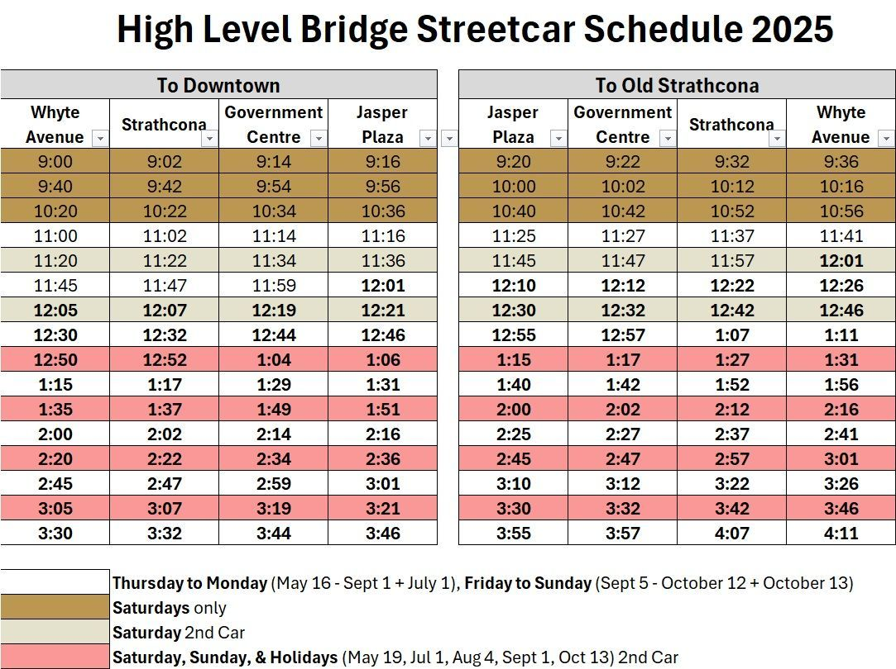
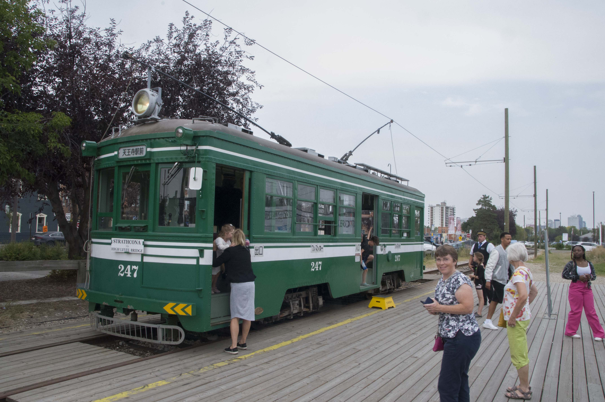
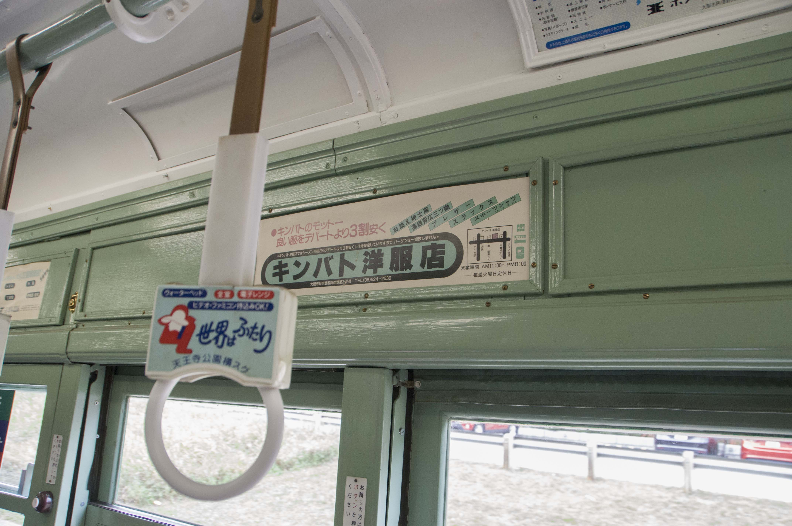
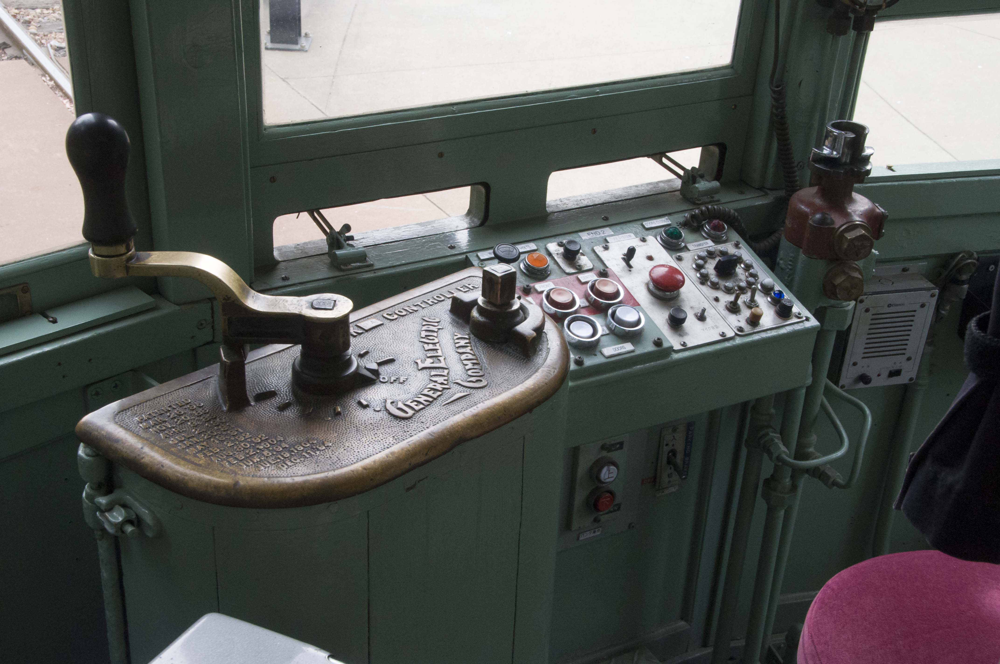
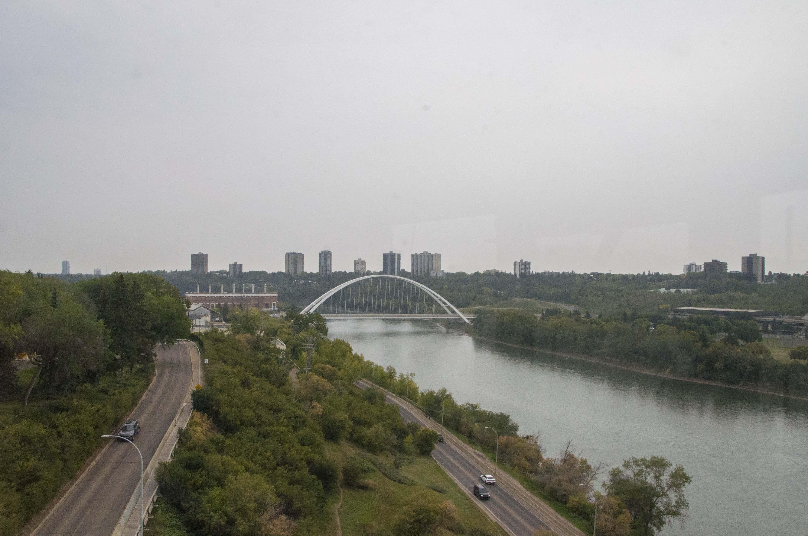
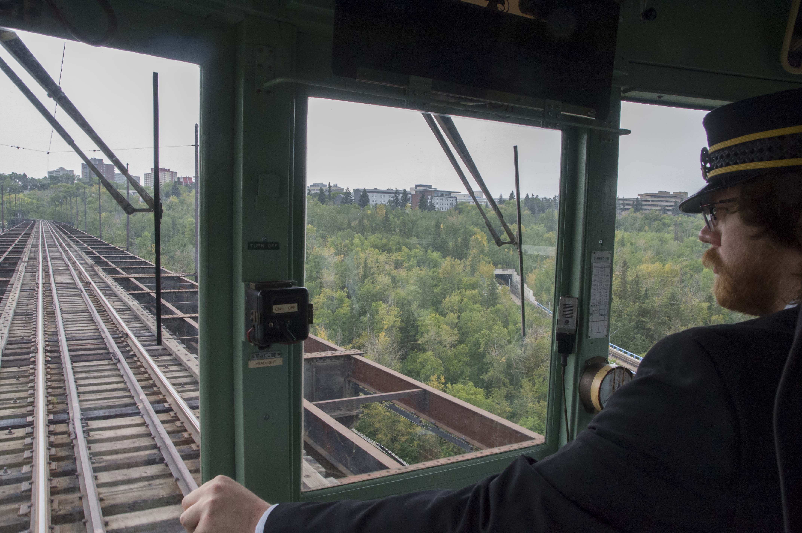
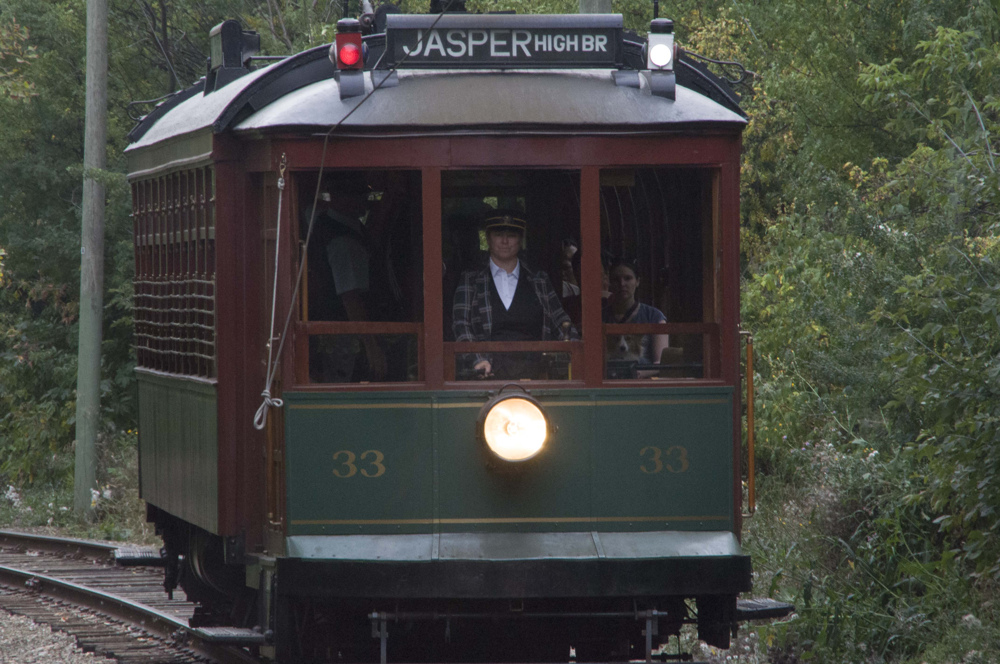
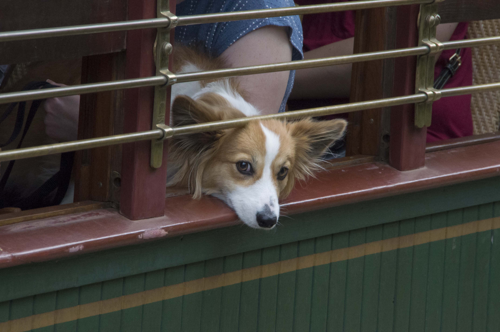

Welcome To Nikolai's Wobsite
Edmonton has Streetcars!
Feb 13, 2026:
Most of the information in this blag post is from the Edmonton Streetcars website. Please check them out after you are done here.
From 1908 until 1951 Edmonton was home to a surprisingly comprehensive streetcar network. Unlike Toronto, which continues to operate their streetcars Edmonton wrongly pivoted to bus service. However, all is not lost.
{kind=link}
The Edmonton Radial Railway Society is a volunteer run and donation funded organization that runs regularly scheduled streetcar service. The most accessible route runs across the High Level Bridge and into downtown. They are also in charge of the streetcars at Fort Edmonton Park, but you need to pay quite a bit to get into the park. The High Level Bridge route pretty much only serves as a tourist attraction, though I suppose you could commute from Strathcona to downtown or vice versa since the fair is only $5. That's a mere 67% more than a regular ETS fare. Also the schedule is pretty sparse. But you could technically make it part of your commute!
Interestingly, they use the old passenger rail right-of-way which was not historically used for streetcar service.

On they day I went (September 7th 2025) they were operating two streetcars. Osaka 247, a car built in 1921 that served the people of Osaka until 1990. It has been doing the High Level Bridge route since 1995. The other car, Edmonton 33, dates from 1912 and was in service until the Edmonton streetcar network was brutally murdered in 1951. I took a round trip in Osaka 247 from the Strathcona end of the route to the downtown end and back.
The trip was overall a fun experience. It was surprisingly busy so I didn't get to sit down. If you are in the area and the streetcar is running I recommend it as a fun way to spend an hour, assuming you have the correct level of enthusiasm for streetcars.

Osaka 247. It was shockingly busy!

Authentic advertisements.

Very neat controls.

The view from the High Level Bridge is quite nice. It was overcast the day I went which doesn't make for the most breathtaking view. I've juiced the colours on this one to make it looks a little less depressing.

View down the high level bridge. The upper deck used to be for trains and streetcars, but now it is only used by the Edmonton Radial Railway Society. The University of Alberta Campus is visible on top of the valley to the right.

Edmonton 33. There is only one track for most of the route, so we had to wait on a siding for the other car to go by.

Dog!